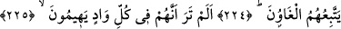
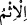

ŞEYTANLAR KİME İNERLER?
221. Şeytanların ise kime ineceğini size haber vereyim mi?
222. Onlar, günaha, iftiraya düşkün olan herkesin üstüne inerler.
223. Bunlar, (şeytanlara) kulak verirler ve onların çoğu yalancıdırlar.
224. Şâirler(e gelince), onlara da sapıklar uyarlar.
225. Baksana onlar her vâdide şaşkın şaşkın dolaşırlar.
226. Ve onlar yapamayacakları şeyleri söylerler.
227. Ancak iman edip iyi işler yapanlar, Allah’ı çok çok ananlar ve haksızlığa
uğratıldıklarında kendilerini savunanlar başkadır. Haksızlık edenler, hangi dönüşe
(hangi akıbete) döndürüleceklerini yakında bileceklerdir.
Ey müşrikler! “Şeytanların ise kime ineceğini size haber vereyim mi?”
Hitap, Mekke kâfirlerinedir. Çünkü onlar, Muhammed (s.a.)’e şeytanların indiğini
söylerlerdi. Allah Teâlâ, şeytanların Kur’ân’ı indirmesinin imkansız olduğunu
açıkladıktan sonra şeytanların O’na inmesini beyan ederek onları reddetti.
222. Onlar, günaha, iftiraya düşkün olan herkesin üstüne inerler.
“Onlar, günaha, iftiraya düşkün olan” çok günah işleyip çok yalan söyleyen
“herkesin üstüne inerler.”
Râğıb der ki: “
” olmayı hak ettiği durumdan çevrilmiş her şeye denir.”
“
” sevabdan geri bırakan, alıkoyan fiillerin ismidir.
Yâni şeytanlar çok iftira, yalan ve günahla muttasıf olan kâhinlerin, Müseylime ve
Tuleyha gibi peygamberlik iddiâsında bulunan kimselerin üzerine inerler. Bunlar da
kâhinlerden sayılır. Çünkü yalan, iftira ve insanları saptırma konusunda aralarında